Upgrading to SQL Server 2005
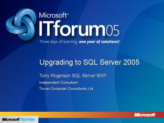
Speaker(s): Tony Rogerson
Microsoft Windows Server 2003 R2 Technical Overview
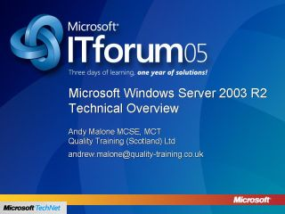
Speaker(s): Andy Malone
Leveraging your Active Directory for Perimeter Defense
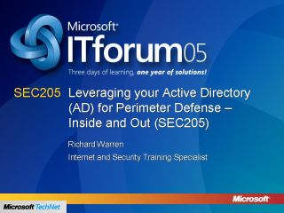
Speaker(s): Richard Warren
Let's take a Look at Windows Vista - Part 1
Speaker(s): James O'Neill
Let's take a Look at Windows Vista - Part 2
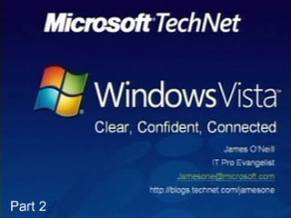
Speaker(s): James O'Neill
Management Pack Melee
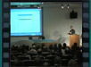
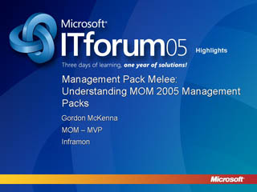
Speaker(s): Gordon McKenna
Virtual Server 2005 R2 Overview
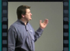
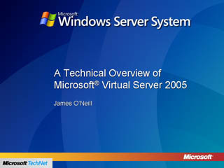
Speaker(s): James O'Neill
Exchange 12: A Whistle-Stop Tour
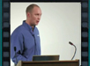
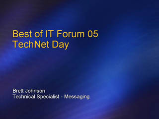
Speaker(s): Brett Johnson
The Security Configuration Wizard
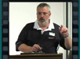
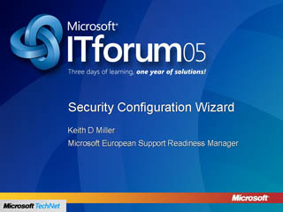
Speaker(s): Keith D Miller
Monad: Microsoft's Next Generation Command Shell
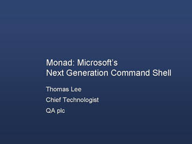
Speaker(s): Thomas Lee
Mobile Messaging and Exchange 2003 SP2 Overview
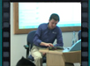
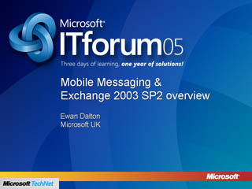
Speaker(s): Ewan Dalton
Windows Vista: Overview and Roadmap
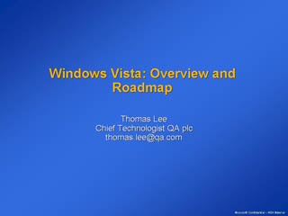
Speaker(s): Thomas Lee